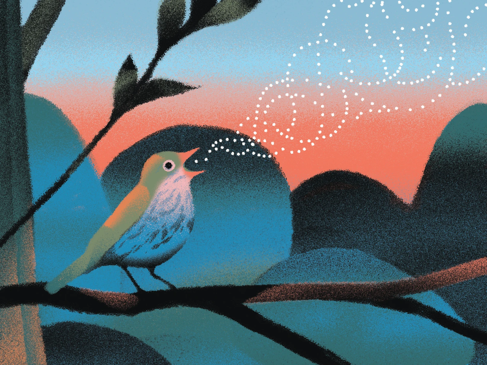
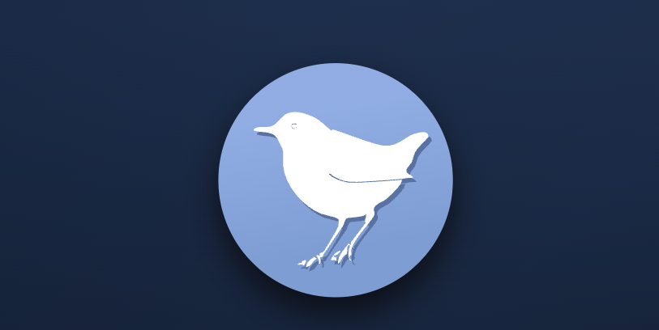
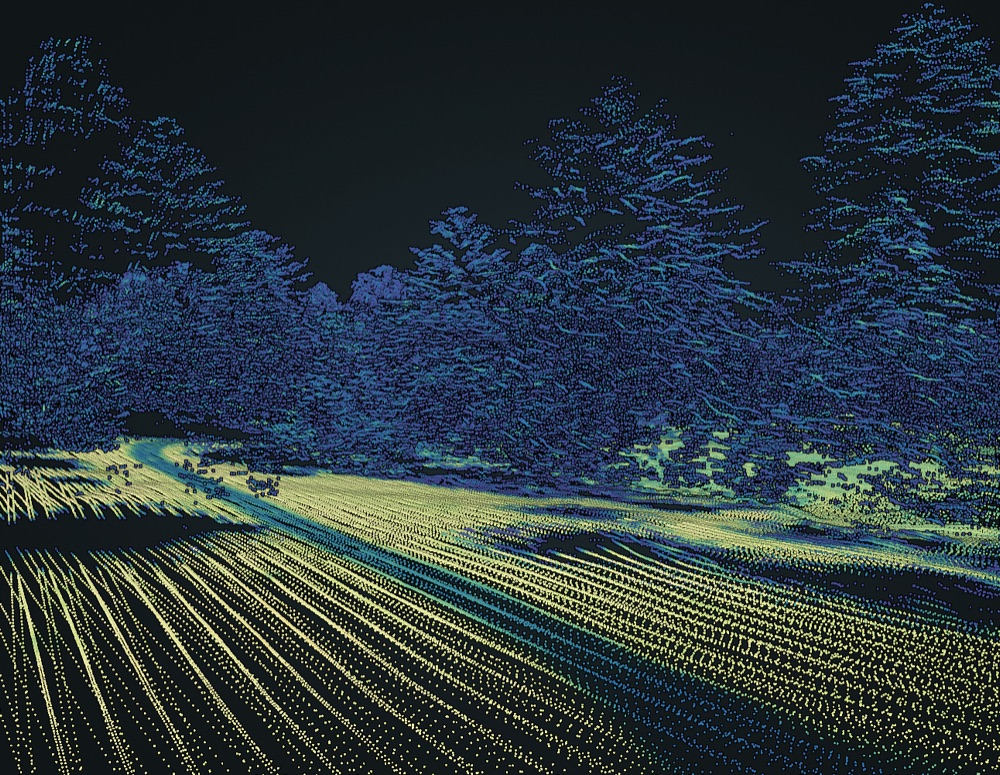

Featured


Aerial LiDAR
Machine learning models that interpret 3D habitat structure.
Selected Pubs
2026
Automated identification of individual birds by song enables multi-year recapture from passive acoustic monitoring data
Nature Methods
2024
Aquatic Soundscape Recordings Reveal Diverse Vocalizations and Nocturnal Activity of an Endangered Frog
The American Naturalist
2023
2023
A Quantitative Evaluation of the Performance of the Low-Cost AudioMoth Acoustic Recording Unit
Sensors
2022
2021
Automated detection of frog calls and choruses by pulse repetition rate
Conservation Biology
Software
Listen In